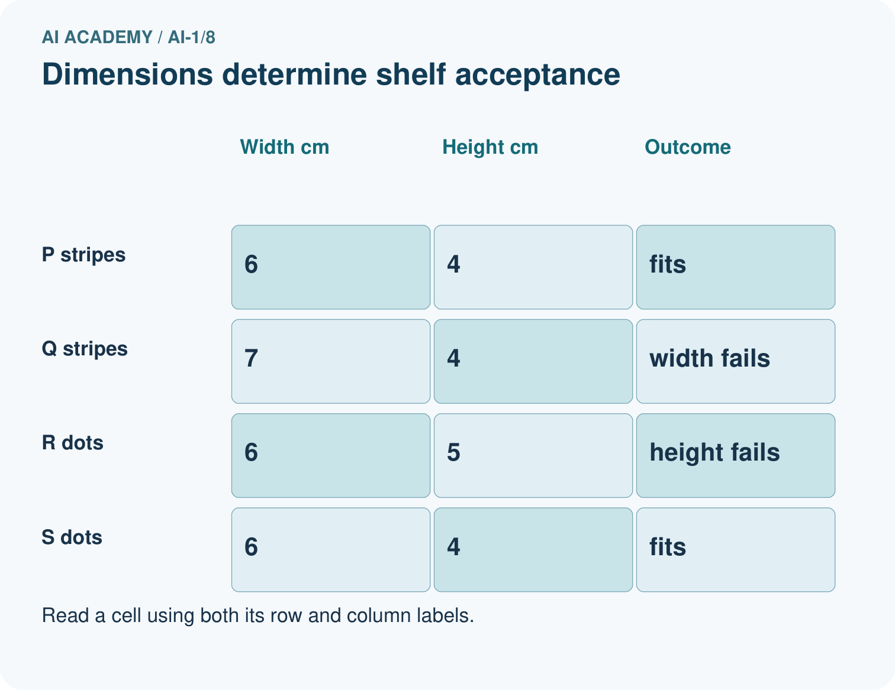
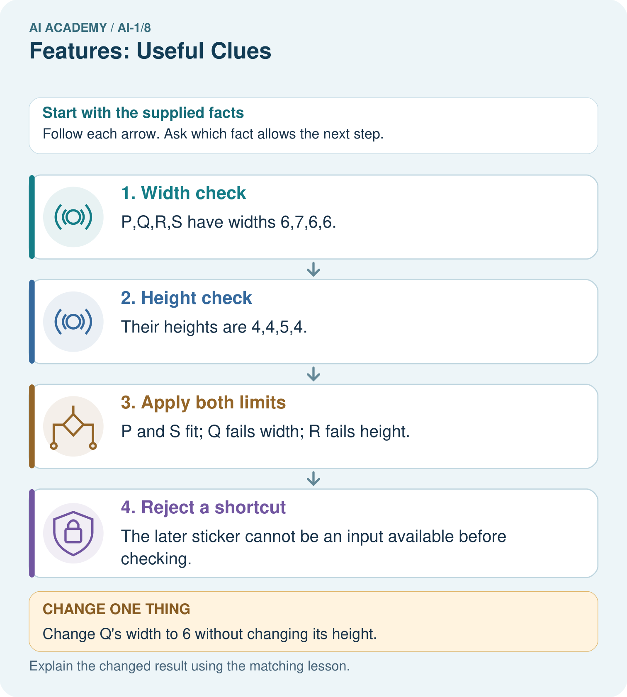

AI Academy · Level 1 · Grade 6 · Week 8 · Workbook
Features: Useful Clues
Learn to understand, design, build, test and explain AI systems responsibly.
Project: Helpful Classroom Sorter
Workbook · 1 of 19
Recall and choose your starting point
Try the recall before opening notes. Then use a different colour or a labelled second line to correct your explanation.
Categories and Labels
Without opening the old lesson, explain one key idea from Categories and Labels. Give an example and a mistake that the idea helps you avoid.
Pictures Become Numbers
Without opening the old lesson, explain one key idea from Pictures Become Numbers. Give an example and a mistake that the idea helps you avoid.
Input, Process, Output
Without opening the old lesson, explain one key idea from Input, Process, Output. Give an example and a mistake that the idea helps you avoid.
Workbook · 2 of 19
Practise with fading help
Use W2: Prove that one measurement is insufficient for Features and useful distinctions. Record the answer once; the lesson and workbook refer to the same attempt.
| Given inputs | Procedure I chose | Middle steps | Result and check |
|---|---|---|---|
Workbook · 3 of 19
Individual reasoning check
Use the worked case for Features and useful distinctions. Proposed explanation: “A stronger model can always recover an omitted measurement”. Decide whether this explanation is supported. Point to the step or supplied fact that decides; explain your repair if needed.
Workbook · 4 of 19
Independent transfer case
Independent case: Design a record for a new task
A fictional display tray accepts a tile if its height is at most 9 cm and its thickness is at most 2 cm, including equality. Other dimensions are fixed. Before checking, you can record height, thickness and pattern name. A pass sticker is added afterward. Choose inputs with units. Construct two tiles with the same height but different labels. Then label a 9 cm high, 2 cm thick striped tile and explain why the sticker is unsuitable as an input before checking.
Attempt this case before feedback. Record any help. Earlier examples below are further practice; a case already practised with feedback cannot establish fresh transfer.
Workbook · 5 of 19
Your learning target
A dataset contains only small smooth leaves and large toothed leaves. A model separates them by size. Design two fresh examples that distinguish a size shortcut from an edge-based rule.
Workbook · 6 of 19
Solve the given case
Two green leaves have smooth and toothed edges. The task is to distinguish edge types.
Choose the relevant feature and explain why size is insufficient.
Show your trace, calculation or evidence
Workbook · 7 of 19
Check a changed case
A sorter separates round and square tiles. Both shapes come in red and blue. Choose a useful feature and a distracting feature. Test your choice on a blue circle.
My independent answer and reason
Week 8 Test and reflect
Workbook · 8 of 19
Design a revealing test
Create a changed input, boundary case or missing-information case. Write the expected answer or safe response before testing.
| Test record | My evidence |
|---|---|
| Changed input or condition | |
| Expected answer or fallback | |
| Observed result | |
| Why the result occurred |
Workbook · 9 of 19
Project checkpoint
Select the smallest useful features for lost-and-found sorting and reject clues tied to a particular classroom or owner.
The project change and evidence I will keep
Workbook · 10 of 19
Self check
I can explain the mechanism. I can show evidence. I can handle a changed case. I can name a limit. Mark each as not yet, with help or independently, and attach supporting work.
Teacher review ____________________ Next step ____________________
Workbook · 11 of 19
Transfer practice from the original programme
A dataset contains only small smooth leaves and large toothed leaves. A model separates them by size. Design two fresh examples that distinguish a size shortcut from an edge-based rule.
Record support used: none, hint or teacher explanation.
Workbook · 12 of 19
W1 Separate inputs from the target
For the fixed-orientation card task, fits requires length at most 12 cm and width at most 8 cm, including equality. Choose the measurements needed as inputs from length, width, colour, card number and the final inspection sticker. State the target label and write the feature record for a 12 cm by 8 cm red card using a defined order.
Workbook · 13 of 19
W2 Prove that one measurement is insufficient
Invent two cards with the same width but different correct labels under the card guide. Give both lengths and widths and justify the labels. Explain why a system receiving only width cannot always label both correctly.
Workbook · 14 of 19
W3 Challenge an apparent colour shortcut
A practice set contains three blue cards that fit and three red cards that are too large. A helper uses blue means fits and red means too large. Create a new card that this helper mislabels. Explain why the perfect practice score did not establish that colour was a reliable feature for this task.
Workbook · 15 of 19
W4 Design a record for a new task
A fictional display tray accepts a tile if its height is at most 9 cm and its thickness is at most 2 cm, including equality. Other dimensions are fixed. Before checking, you can record height, thickness and pattern name. A pass sticker is added afterward. Choose inputs with units. Construct two tiles with the same height but different labels. Then label a 9 cm high, 2 cm thick striped tile and explain why the sticker is unsuitable as an input before checking.
Workbook · 16 of 19
W5 Notice when the task changes
The delivery station now sorts cards into red and blue bins instead of checking dimensions. Which previously unneeded feature becomes useful? Explain why length and width alone may now be insufficient. Give two cards that support your explanation.
Workbook · 17 of 19
Feedback, return check and learning record
| Evidence | My record |
|---|---|
| Worked alone / hint / model | |
| First step I repaired and why | |
| New case checked later; date and result | |
| What I can now explain without notes | |
| One remaining question |
Revisit this idea with your teacher after a delay. Familiarity is different from explaining and using it on a changed case.
Workbook · 18 of 19
Pictorial case practice: Features: Useful Clues
A fictional shelf accepts a craft box only if width is at most 6 cm and height at most 4 cm.
Boxes P=(6,4,stripes), Q=(7,4,stripes), R=(6,5,dots), S=(6,4,dots).
A green acceptance sticker is attached only after the shelf check.


Point to the pair that tests pattern, then explain why the sticker is a bad early input.
Support used: alone / hint / worked example. This record is practice evidence.
Project connection: Choose sorter features that exist at decision time and actually connect to the stated classroom requirement.
Workbook · 19 of 19
Project portfolio milestone
Project: Helpful Classroom Sorter
Current milestone: Make a transparent first version. Keep a trace of how one input becomes an output; explain the rule or learned component.
Choose sorter features that exist at decision time and actually connect to the stated classroom requirement.
| Evidence to keep | My record |
|---|---|
| This week’s input and deciding step | |
| Prediction and actual result (or labelled paper trace) | |
| One change since the previous checkpoint and why | |
| One error or limit and the next test |